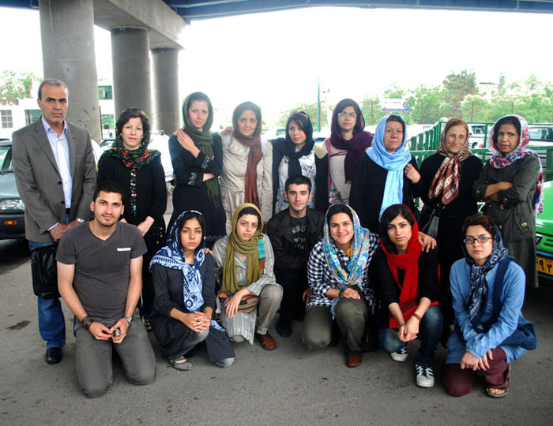
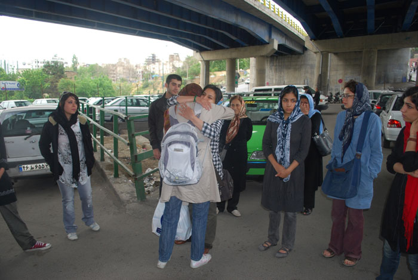
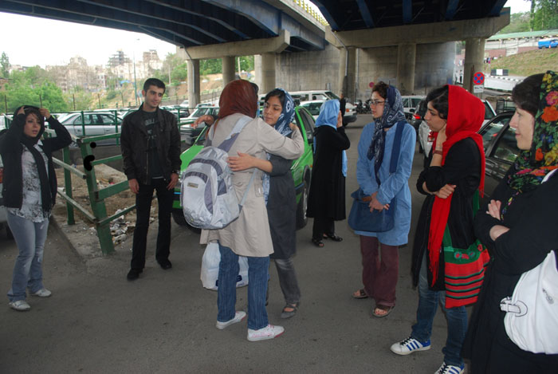
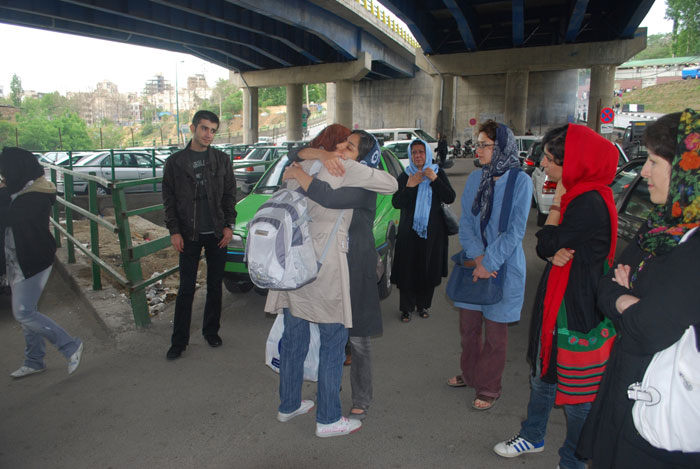
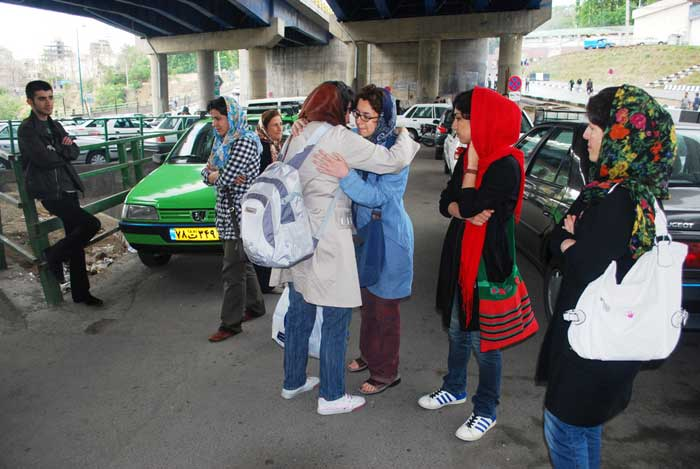
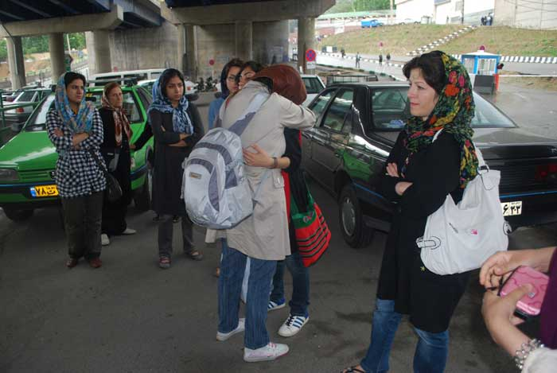
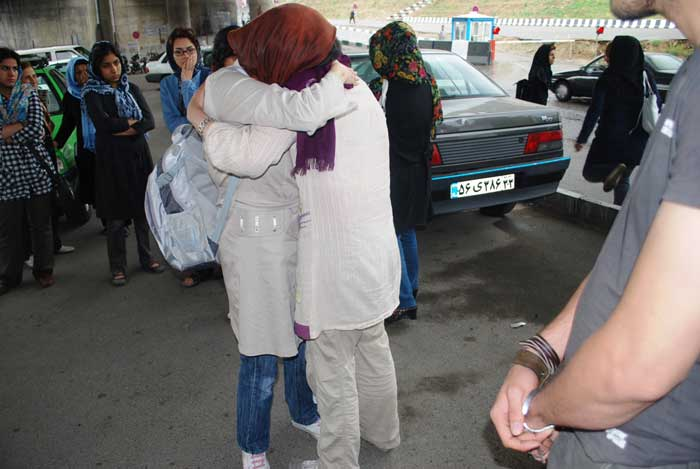

|
|

محبوبه کرمی: خوشحالم برای هدفم که برابری برای زنان سرزمینم است به زندان میروم
دو شنبه26 اردیبهشت 1390

تغییر برای برابری - محبوبه کرمی، از فعالین حقوق زنان و حقوق بشر، به رغم افسردگی حاد، به رغم داشتن پدری آلزایمری و سالخورده، برای اجرای حکم زندان احضار شد. تصور می کردیم به خاطر وضعیت جسمی و روحی خودش و پدرش زمان اجرای حکم را به تاخیر اندازند اما چنین نشد. صبح روز 25 اردیبهشت ماه خودش را به زندان اوین معرفی کرد و انتظار ما برای بازگشت او بیهوده بود. پیش از خداحافظی خطاب به دوستانش که به شدت ناراحت و نگران وضعیت سلامت محبوبه در زندان بودند، گفت: خوشحالم برای هدفم که برابری برای زنان سرزمینم است به زندان میروم و از راهی که انتخاب کردم پشیمان نیستم. باید در اهدافمان پایدار باشیم و مصائب را تحمل کنیم.
پیش از این پای درد دل محبوبه نشستیم و از وضعیت سلامتش و پدر بیمارش که محبوبه تنها پرستار اوست، پرسوجو کردیم.
از وضعیت بیماری اش گفت : «زمان زیادی است که دچار افسردگی حاد هستم. این بیماری برایم استرس، اضطراب، دل آشوب دائمی به همراه دارد. داروهایی با دوز بالا مصرف می کنم . از جمله آنها کلونازپام است.»

با توجه به تجربیات قبلی ام در زندان، شرایط بهداشتی و تغذیه زندانیان اصلا مناسب نیست. پتوها، ملافه ها و موکت ها هم تمیز نبودند. غالبا در اوین آب گرم نداشتیم. اما آنچه نگرانترم می کند احتمال انتقال خودم و دیگر زندانیان زن به زندان قرچک است. این زندان به شدت غیراستاندارد است و شرایط بسیار نامطلوبتری دارد.
این فعال زنان در باب وضعیت رسیدگی به سلامت زندانیان زن گفت: با توجه به تجربیات پیشینم از زندان،. احتمال زیادی می دهم که به نسخه پزشکم اهمیتی ندهند و داروهایم را در اختیارم نگذارند و به جای آن داروهای مشابه تجویز کنند که این تغییر دارویی به صلاح شرایط روحی ام نیست. متاسفانه بارهای قبل نیز پزشک بهداری به شکل ظاهری بیماری را رسیدگی میکرد. »

محبوبه در پاسخ به این سوال که آیا با توجه به شرایط جسمی و روحی خود درخواستی برای کاهش مجازات داشته است گفت: « نظر پزشکی قانونی و پزشک خودم بر این است که زندان باعث تشدید بیماری افسردگی من خواهد شد اما این رای باعث کاهش مجازات کیفری ام نشد. هم به صورت غیررسمی و هم رسمی صحبت های پزشکم را به قاضی منتقل کردم و مدارک پزشکی قانونی هم در پرونده ام موجود است.»
*زمان زیادی است که دچار افسردگی حاد هستم. این بیماری برایم استرس، اضطراب، دل آشوب دائمی به همراه دارد. داروهایی با دوز بالا مصرف می کنم . از جمله آنها کلونازپام است.

او از مشکلات متعدد زنان در زندان میگوید. از جمله فقر فرهنگی، فقر اقتصادی، قوانین تبعیض آمیز بین مردان و زنان که عامل حضور آنها در زندان است. به طور کلی تمامی زندانیان حتی از حقوق قانونی خود محروم هستند و زنان زندانی حتی نسبت به مردان زندانی از یکسری امتیاز ها هم محرومند:
«خوشبختانه در بندی که می روم تفکیک جرائم صورت گرفته است اما با توجه به تجربیات قبلی ام در زندان، شرایط بهداشتی و تغذیه زندانیان اصلا مناسب نیست. پتوها، ملافه ها و موکت ها هم تمیز نبودند. غالبا در اوین آب گرم نداریم یا در تابستان کولر نداشتیم یا اگر هم بود قابل استفاده نبود. این بار هم نمی توانم دور نمای مناسبی را از دوران زندان ترسیم کنم. اما آنچه من را نگرانتر می کند احتمال انتقال خودم و دیگر زندانیان زن به زندان قرچک است. این زندان به شدت غیراستاندارد است و شرایط بسیار نامطلوبتری دارد. از زندان قرچک شرایط اسفناکی از نظر غذا، بهداشت،فضای عمومی،عدم تفکیک جرائم،آب و هوایی، و ...گزارش میشود.

«در حال حاضر نگرانی اصلیم وضعیت سلامت پدر سالمندم هست. او به شدت بیمار است . پزشک قانونی رفتم و وضعیت پدرم را شرح دادم ولی اهمیت ندادند. اعتراض هم زدم و به آنها گفتم که سرپرستی پدر 87 ساله ام به عهده من هست ولی ترتیب اثر نداند. پس از فوت مادرم تنها پرستار پدر، من هستم. در جریان بازداشت قبلیم مادر یک روزپس از آزادیم از زندان فوت کرد، و در اولین سالگردش نیز حضور نداشتم.»

محبوبه کرمی پیش از این احضاریهای کتبی مبنی بر اجرایی شدن حکم 3 سال حبس در زندان اوین، دریافت کرد. بر اساس این احضاریه، وی می بایست ظرف سه روز خود را به دادسرای اوین معرفی کند.
کرمی در شعبه 54 تجدید نظر دادگاه انقلاب به ریاست قاضی موحد به سه سال حبس تعزیری محکوم شد. وی پیش از این در دادگاه بدوی در شعبه 26 دادگاه انقلاب تهران به ریاست قاضی پیرعباسی، به تحمل چهار سال حبس تعزیری محکوم شده بود.

اتهامات محبوبه کرمی "عضویت در مجموعه فعالان حقوق بشر در ایران"، "فعالیت تبلیغی علیه نظام"، "اجتماع و تبانی با قصد ارتکاب جرایم علیه امنیت کشور" و "نشر اکاذیب" عنوان شده بود.وی از اتهام "نشر اکاذیب" مبرا شده و برای عضویت در "مجموعه فعالان حقوق بشر در ایران" به تحمل دو سال حبس و به اتهام "فعالیت تبلیغی علیه نظام"، "اجتماع و تبانی با قصد ارتکاب جرایم علیه امنیت کشور" نیز به تحمل دو سال حبس تعزیری محکوم شده بود.
محبوبه کرمی، عضو کمپین یک میلیون امضا، در روز 11 اسفند ماه 1388با هجوم ماموران امنیتی به منزلش بازداشت و پس از گذشت 170 روز، شامگاه چهارشنبه 27 مردادماه 1389 با تودیع وثیقه 500 میلیون تومانی آزاد شد.محبوبه کرمی پیش از این هم پنج بار بازداشت شده بود. بار اول و دوم در رابطه با درگیری های 18 تیر، بار سوم24 خرداد 1387 به اتهام اقدام علیه امنیت ملی که پس از 70 روز آزاد شد. باردیگر، 6 فروردین 1388 به همراه 11 تن از اعضای کمپین و مادران صلح که قصد دیدار نوروزی با خانواده زهرا بنی یعقوب را داشتند به اتهام اخلال در نظم عمومی دستگیر و پس از 13 روز آزاد شد. در همه پرونده های فوق، حکم تبرئه برای وی صادر شده بود.